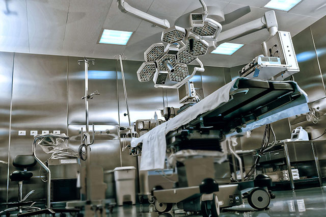
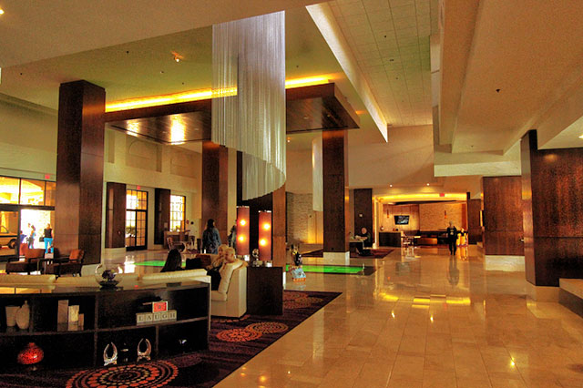
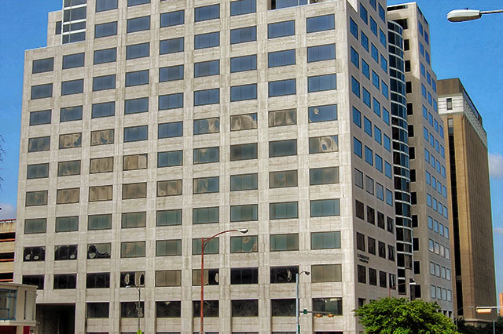

Commercial
Commercial plumbing installation and maintenance can support hospitality venues, office buildings, medical facilities, and other business properties across Greater Tampa Bay.
Illustrative project categories, not a portfolio of completed work by this website operator.
Commercial plumbing installation and maintenance can support hospitality venues, office buildings, medical facilities, and other business properties across Greater Tampa Bay.
New construction plumbing commonly requires coordinated planning, accurate estimating, code-compliant installation, and scheduling alongside other building trades.
Industrial plumbing can include specialized water supply, waste piping, drainage and venting systems suited to the facility’s operations.
Commercial plumbing projects depend on careful planning, sound installation practices and reliable maintenance. Important considerations include the integrity and functionality of piping systems, coordination with building teams and appropriate completion schedules.
When considering a commercial, industrial or construction plumbing provider, useful factors to review include:

Hospitals, dental practices, clinics and nursing homes may require specialized piping, backflow prevention and medical gas systems. Any such work should be undertaken by appropriately qualified professionals.

Multi-story buildings may require pressure management. Pools, kitchens and fire-protection systems can also create special plumbing design and maintenance considerations.
High-volume food preparation may call for grease-management solutions, suitable drainage and coordinated building systems.

Office plumbing systems should account for peak usage, disruption to tenants, drinking-water supply, filtration and measures to limit water damage.
Specialty wash stations, hair-related drainage and frequent equipment use influence plumbing design and maintenance needs in salons and spas.
For inquiries about commercial, industrial and construction plumbing, use the telephone link below. This independent informational website does not claim to be the former business or to provide its historical services.
(555) 555-5555This page contains information adapted from the former West Coast Plumbing Services, Inc. website. That business is no longer operating. This website is independently operated and is not affiliated with the former business.
Disclaimer: West Coast Plumbing FL is a free service to assist homeowners in connecting with local service providers. All contractors/providers are independent and West Coast Plumbing FL does not warrant or guarantee any work performed. It is the responsibility of the homeowner to verify that the hired contractor furnishes the necessary license and insurance required for the work being performed. All persons depicted in a photo or video are actors or models and not contractors listed on West Coast Plumbing FL.
Same-day and 24/7 emergency services are subject to provider participation, location, technician availability, and demand. Availability is not guaranteed and may vary by market and appointment capacity.